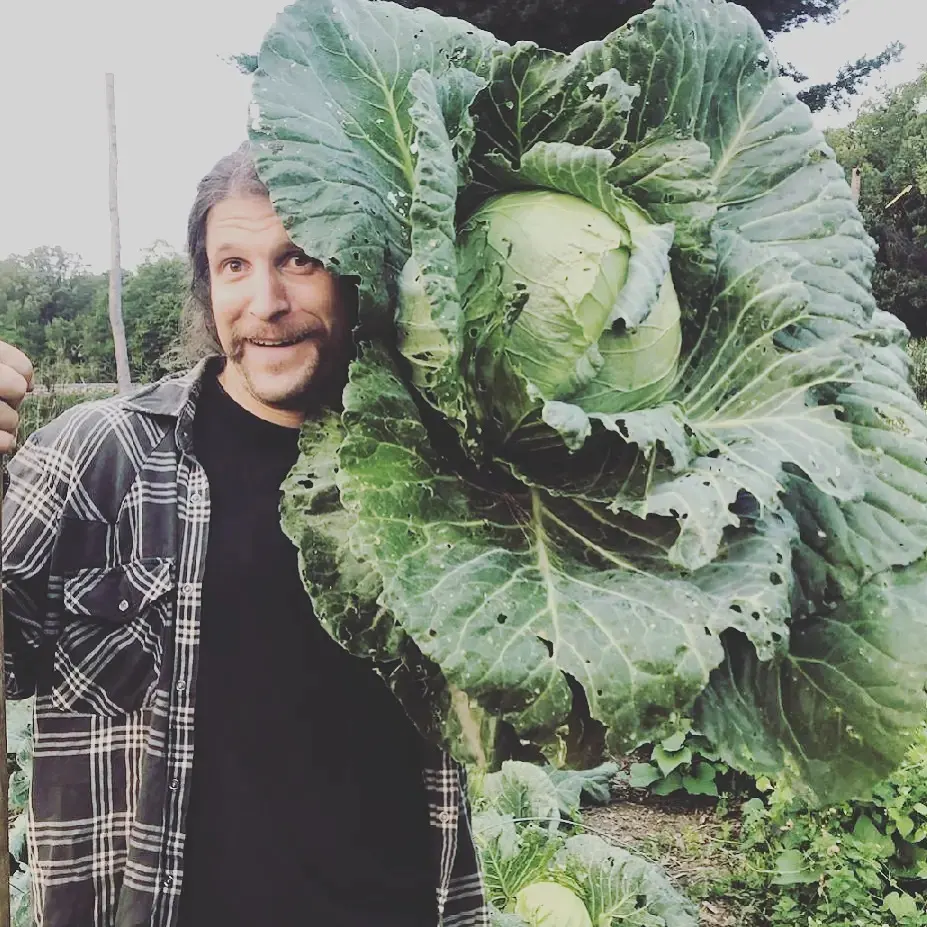

PhD in Natural Resources
Since my PhD, I've worked in the agricultural carbon space on methodology development, project design and project implementation. I've worked to balance the need for rigour with the complexities of agricultural practice and the costs of measurement.
My projects have included control-plot design, sampling design, equivalent soil mass corrections and understanding the uncertainty of Digital Soil Maps derived from machine learning.
My academic research considered complexity in defining, measuring, regulating and implementing new "greener" agricultural approaches. From "Organic" to "Agroecology" to "Regenerative", new ideas about good farming are often about context and relationship. This makes it harder to understand these in bureaucratic and centralized ways.
Drawing these lines is tricky, but also central to most attempts at governing agriculture towards a more sustainable future. I examined these questions through an array of qualitative and quantitative methods.